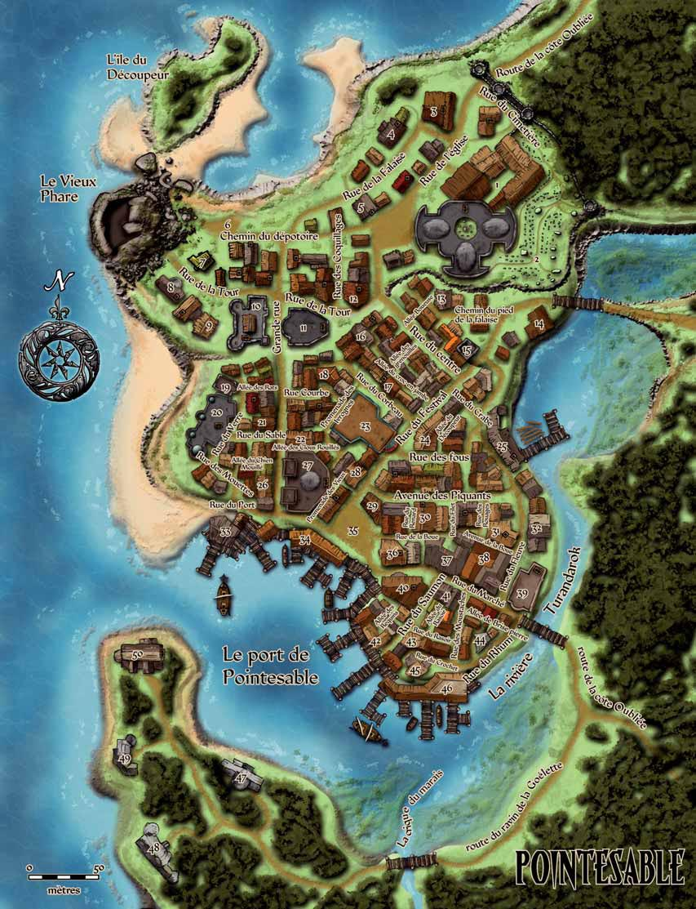

⇄
△
switch map
S
Cathédrale (1)
S
Chez Hannah - Guérisseur (45)
S
Maison des pierres bleues - Monastère (19)
S
Ossuaire (2)
C
Armurerie de Savah (12)
C
Au gobelin curieux - Librairie (22)
C
Aux vêtements fins de Vernah - Couturier (30)
C
Bazar (26)
C
Bijoutier (5)
C
Boucherie (36)
C
Epicerie (29)
C
Forge du chien rouge (15)
C
La boutique de Pointesable - Bazar (41)
C
Le chemin du Nord - Cartographe (4)
C
Le garde-manger du cloporte - Herboriste (16)
C
Le serpent à plumes - Magicien (44)
C
Les Chariots de Wheen (31)
C
Les délices de Pointesable - Boulangerie (21)
C
Les solutions en bouteille - Alchimiste (17)
C
Marché (35)
C
Poissonnerie (34)
C
Serrurier (9)
C
Tannerie de Rovansky (14)
A
Académie de Turandarok (27)
A
Alliance Marchande (40)
A
Garnison (10)
A
Guilde des Charpentiers (24)
A
Hôtel de ville (11)
T
Auberge du Cerf Blanc (3)
T
Auberge du Dragon rouillé (37)
T
Chez Risa - Taverne (13)
T
Taverne de La Dent Cassée (18)
T
Taverne de la Musette du Gros (42)
T
Taverne de la Myxine (33)
I
Brasserie des Deux chevaliers (39)
I
Chantier Naval (46)
I
Moulin des Scarnetti (32)
I
Scierie (25)
I
Verrerie (20)
D
Cabane de Gorvi (7)
D
Ecuries du gobelin écrabouillé (38)
D
Le bord du dépotoir (6)
D
Les Châtons de la Pixie - Maison close (43)
D
Maison de madame Mvashti - Voyante (28)
D
Manoir des Déverin (50)
D
Manoir des Kaijitsu (49)
D
Manoir des Scarnetti (48)
D
Manoir des Valdemar (47)
D
Sage (8)
D
Théâtre (23)
D
Vieux Phare (51)